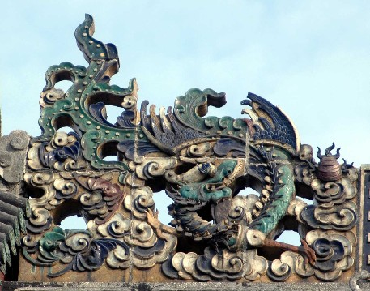

龙是中国神话中的一种善变化、能兴云雨、利万物的神异动物，是我国上古先民创造的理想动物形象和
图腾。《庄子》有云：“千金之珠，必在九重之渊而骊龙颌下”。《埤雅》也言“龙珠在颌”。其意是
说龙珠藏在龙口中，适当的时候，龙会把它吐出来。传说龙起源于蛇类，蛇类是卵生的，古人把蛇卵当
作一种“珠”。龙戏珠就是龙戏“卵”，表现了龙这个神物对生命的呵护，表达了古人对传承不息的生
命现象的认识和理解。龙戏珠图案，其珠多有火焰升腾，下面是滔滔海水，如火球跃出海面，让人联想
到太阳升起在海平面的场景，因此也可理解为“太阳出海”。太阳自东方升起的，龙则是代表东方的神
物。龙戏珠有太阳崇拜的意思，是太阳崇拜和龙崇拜的交融。
「位于：首进正中」